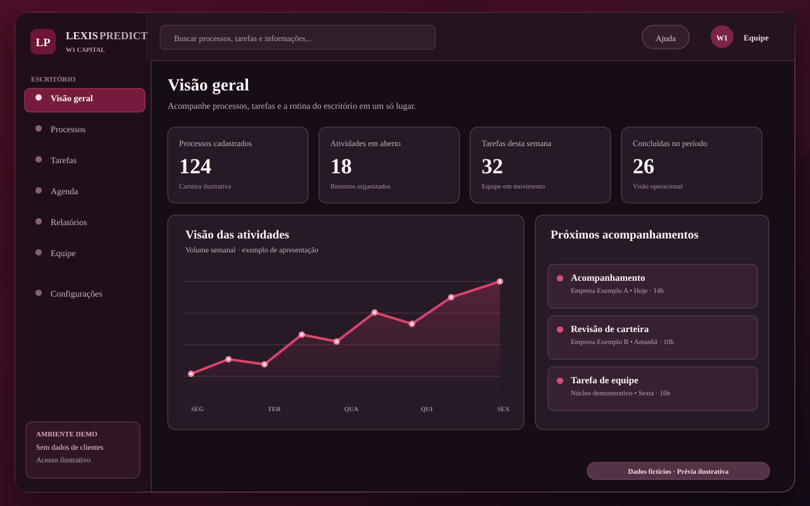

Carteira processual
Consulte registros, utilize filtros e centralize informações da carteira cadastrada.
Reúna processos, tarefas e atividades da equipe em um só ambiente. Conheça o LexisPredict em uma demonstração assistida e avalie o que faz sentido para a sua operação.

Demonstração com dados fictícios. Não corresponde a uma captura de dados reais. Sem informações de clientes.
Experimente uma reprodução pequena da interface do LexisPredict oficial. Navegue por processos, tarefas, agenda, relatórios e equipe com exemplos fictícios, sem login ou alterações no aplicativo real.
O objetivo é ajudar a equipe a acompanhar as informações operacionais com mais consistência.
Consulte registros, utilize filtros e centralize informações da carteira cadastrada.
Organize atividades, responsáveis e acompanhamentos da equipe em um fluxo mais claro.
Trabalhe com informações em planilhas e relatórios, de acordo com a permissão do usuário.
Comece pelas funções essenciais e avalie módulos complementares conforme o seu contexto.
O uso de integrações judiciais, automações, WhatsApp e funções de IA depende de validação e configuração específica. O sistema não substitui análise jurídica humana nem garante resultados judiciais.
Os valores abaixo são as referências mensais existentes no LexisPredict. A contratação depende de avaliação técnica, escopo aprovado e condições formalizadas.
Para organizar o trabalho diário.
Carteira, tarefas, equipe, agenda e importação/exportação.
Quero avaliar o Essencial ↗Para avaliar CRM, finanças e indicadores.
Funcionalidades adicionais sujeitas à validação na demonstração.
Conhecer este plano ↗Para necessidades de módulos complementares.
Fontes judiciais e integrações dependem de cobertura e testes.
Conhecer este plano ↗Para avaliar a combinação mais ampla de recursos.
Disponibilidade de cada função confirmada antes da proposta.
Conhecer este plano ↗Implantação: para o Essencial, estamos avaliando uma taxa de referência de R$ 490, sujeita à aprovação comercial e ao escopo. Valores e condições finais serão confirmados em proposta, sem cobrança automática neste site.
Entendemos o volume de trabalho, a equipe e as principais dificuldades.
Uma apresentação assistida com dados fictícios, sem expor informações jurídicas de terceiros.
A W1 confirma o escopo, as condições e a implantação antes de qualquer contratação.
Conte o que mais atrasa sua rotina. Preparamos sua solicitação, e você confirma o envio no próprio aplicativo de e-mail. Sem cadastro automático.
Conheça o apoio operacional à carteira processual: organização de registros, tarefas e preparação de retornos sob autorização e supervisão do escritório. Oferta independente do CRM, sujeita a contrato.
Conhecer o apoio operacional ↗Preparamos um checklist gratuito com sete práticas para organizar processos, tarefas, equipe e retornos. Não precisa fornecer informações do escritório.
As primeiras implantações são assistidas. Cadastro, contrato, validação técnica e condições de pagamento são confirmados individualmente; esta página não recebe pagamentos.
Não. A W1 deve utilizar exemplos fictícios, em ambiente separado, sem expor dados de processos e pessoas reais.
Existem módulos de integração que dependem de configuração, testes e fontes externas. Não prometemos cobertura universal, envio ilimitado nem atualização em tempo real.